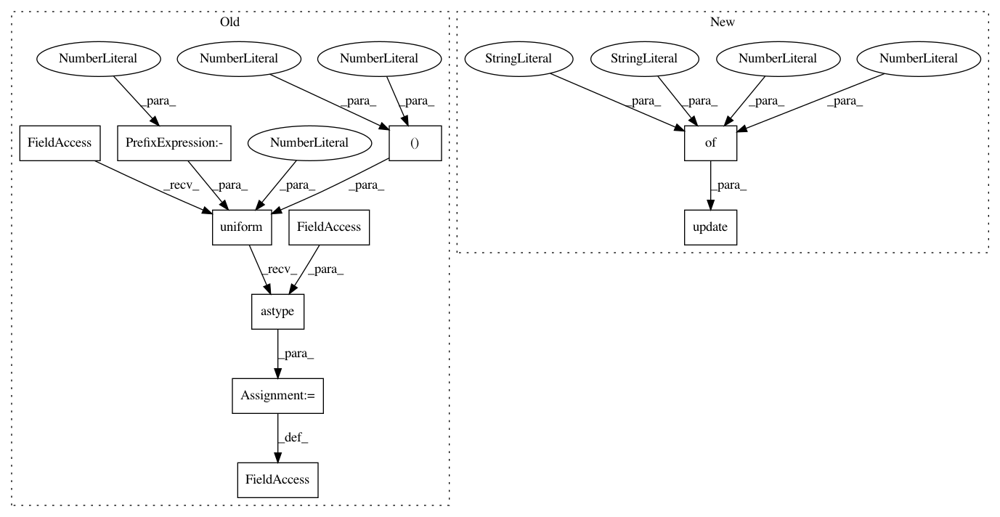

49f659d7b893a0e94b85d2c371f7abbb4e0e4082,tests/chainer_tests/links_tests/connection_tests/test_convolution_2d.py,TestConvolution2D,setUp,#TestConvolution2D#,22
Before Change
initial_bias=chainer.initializers.Normal(1, self.x_dtype))
self.link.cleargrads()
self.x = numpy.random.uniform(-1, 1,
(2, 3, 4, 3)).astype(self.x_dtype)
self.gy = numpy.random.uniform(-1, 1,
(2, 2, 2, 2)).astype(self.x_dtype)
self.check_backward_options = {}
if self.x_dtype == numpy.float16 or self.W_dtype == numpy.float16:
After Change
param_names = ("W", "b")
def setUp(self):
self.check_backward_options.update({
"atol": 5e-4, "rtol": 5e-3
})
if self.x_dtype == numpy.float16 or self.W_dtype == numpy.float16:
self.check_forward_options.update({"atol": 5e-3, "rtol": 5e-2})
self.check_backward_options.update({
"atol": 1e-3, "rtol": 1e-3
In pattern: SUPERPATTERN
Frequency: 3
Non-data size: 10
Instances
Project Name: chainer/chainer
Commit Name: 49f659d7b893a0e94b85d2c371f7abbb4e0e4082
Time: 2019-08-05
Author: ecastill@preferred.jp
File Name: tests/chainer_tests/links_tests/connection_tests/test_convolution_2d.py
Class Name: TestConvolution2D
Method Name: setUp
Project Name: chainer/chainer
Commit Name: f300d656bb5a0238a7f63660cd5600bf822b7261
Time: 2019-10-09
Author: ishanrai05@gmail.com
File Name: tests/chainer_tests/functions_tests/math_tests/test_scale.py
Class Name: TestScale
Method Name: setUp
Project Name: chainer/chainer
Commit Name: 15831b726cc8c83e6fe7d79cc97b401d2fec4001
Time: 2019-12-23
Author: kataoka@preferred.jp
File Name: tests/chainer_tests/functions_tests/loss_tests/test_decov.py
Class Name: TestDeCov
Method Name: setUp